Getting Graphic
Base graphics and ggplot2
Download the PDF of the presentation
The R Script associated with this page is available here. Download this file and open it (or copy-paste into a new script) with RStudio so you can follow along.
Data
In this module, we’ll primarily use the mtcars data object. The data was extracted from the 1974 Motor Trend US magazine, and comprises fuel consumption and 10 aspects of automobile design and performance for 32 automobiles (1973–74 models).
A data frame with 32 observations on 11 variables.
| Column name | Description |
|---|---|
| mpg | Miles/(US) gallon |
| cyl | Number of cylinders |
| disp | Displacement (cu.in.) |
| hp | Gross horsepower |
| drat | Rear axle ratio |
| wt | Weight (lb/1000) |
| qsec | 1/4 mile time |
| vs | V/S |
| am | Transmission (0 = automatic, 1 = manual) |
| gear | Number of forward gears |
| carb | Number of carburetors |
```
Here’s what the data look like:
library(ggplot2);library(knitr)
kable(head(mtcars))| mpg | cyl | disp | hp | drat | wt | qsec | vs | am | gear | carb | |
|---|---|---|---|---|---|---|---|---|---|---|---|
| Mazda RX4 | 21.0 | 6 | 160 | 110 | 3.90 | 2.620 | 16.46 | 0 | 1 | 4 | 4 |
| Mazda RX4 Wag | 21.0 | 6 | 160 | 110 | 3.90 | 2.875 | 17.02 | 0 | 1 | 4 | 4 |
| Datsun 710 | 22.8 | 4 | 108 | 93 | 3.85 | 2.320 | 18.61 | 1 | 1 | 4 | 1 |
| Hornet 4 Drive | 21.4 | 6 | 258 | 110 | 3.08 | 3.215 | 19.44 | 1 | 0 | 3 | 1 |
| Hornet Sportabout | 18.7 | 8 | 360 | 175 | 3.15 | 3.440 | 17.02 | 0 | 0 | 3 | 2 |
| Valiant | 18.1 | 6 | 225 | 105 | 2.76 | 3.460 | 20.22 | 1 | 0 | 3 | 1 |
Base graphics
Base plot()
R has a set of ‘base graphics’ that can do many plotting tasks (scatterplots, line plots, histograms, etc.)
plot(y=mtcars$mpg,x=mtcars$wt)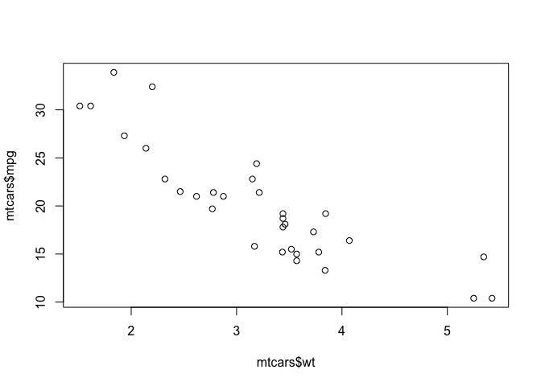
Or you can use the more common formula notation:
plot(mpg~wt,data=mtcars)
And you can customize with various parameters:
plot(mpg~wt,data=mtcars,
ylab="Miles per gallon (mpg)",
xlab="Weight (1000 pounds)",
main="Fuel Efficiency vs. Weight",
col="red"
)
Or switch to a line plot:
plot(mpg~wt,data=mtcars,
type="l",
ylab="Miles per gallon (mpg)",
xlab="Weight (1000 pounds)",
main="Fuel Efficiency vs. Weight",
col="blue"
)
See ?plot for details.
Histograms
Check out the help for basic histograms.
?histPlot a histogram of the fuel efficiencies in the mtcars dataset.
hist(mtcars$mpg)
ggplot2
The grammar of graphics: consistent aesthetics, multidimensional conditioning, and step-by-step plot building.
- Data: The raw data
geom_: The geometric shapes representing dataaes(): Aesthetics of the geometric and statistical objects (color, size, shape, and position)scale_: Maps between the data and the aesthetic dimensions
data
+ geometry,
+ aesthetic mappings like position, color and size
+ scaling of ranges of the data to ranges of the aestheticsAdditional settings
stat_: Statistical summaries of the data that can be plotted, such as quantiles, fitted curves (loess, linear models), etc.coord_: Transformation for mapping data coordinates into the plane of the data rectanglefacet_: Arrangement of data into grid of plotstheme: Visual defaults (background, grids, axes, typeface, colors, etc.)
For example, a simple scatterplot: 
Add variable colors and sizes: 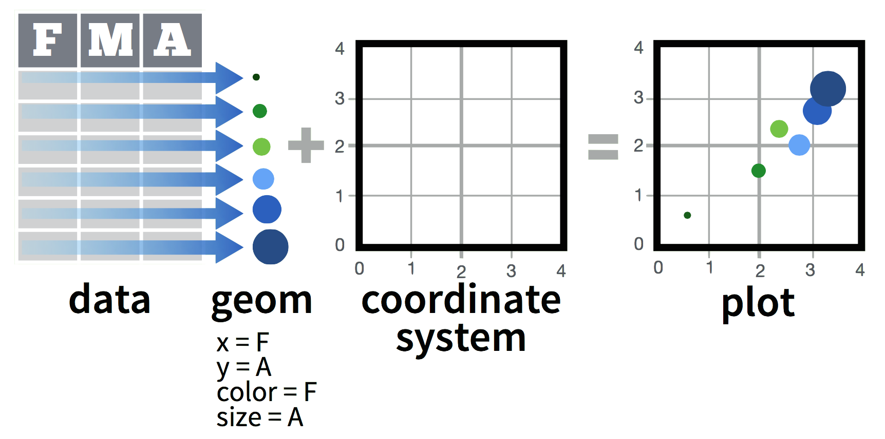
Simple scatterplot
First, create a blank ggplot object with the data and x-y geometry set up.
p <- ggplot(mtcars, aes(x=wt, y=mpg))
summary(p)## data: mpg, cyl, disp, hp, drat, wt, qsec,
## vs, am, gear, carb [32x11]
## mapping: x = wt, y = mpg
## faceting: facet_null()p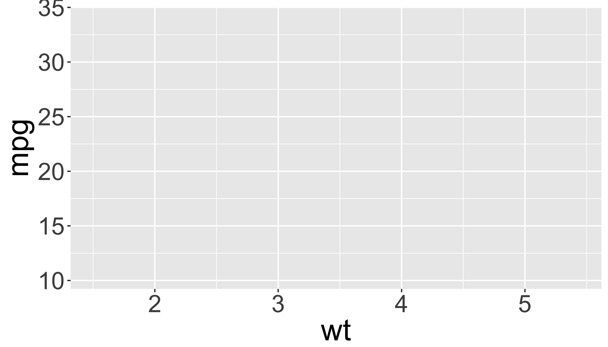
p + geom_point()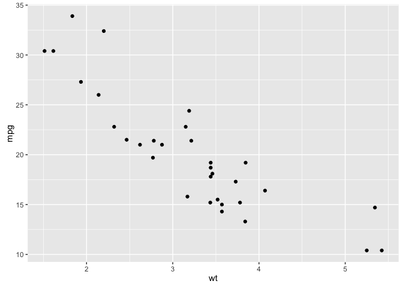
Or you can do both at the same time:
ggplot(mtcars, aes(x=wt, y=mpg)) +
geom_point()
Aesthetic map: color by # of cylinders
p +
geom_point(aes(colour = factor(cyl)))
Set shape using # of cylinders
p +
geom_point(aes(shape = factor(cyl)))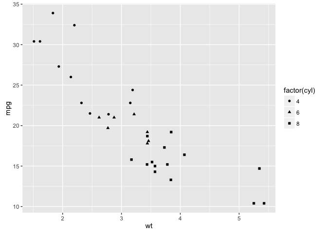
Adjust size by qsec
p +
geom_point(aes(size = qsec))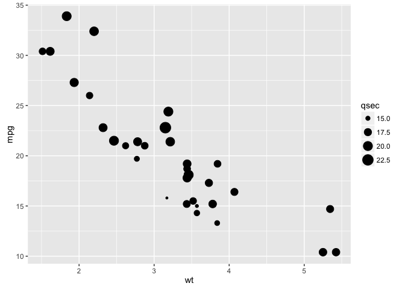
Color by cylinders and size by qsec
p +
geom_point(aes(colour = factor(cyl),size = qsec))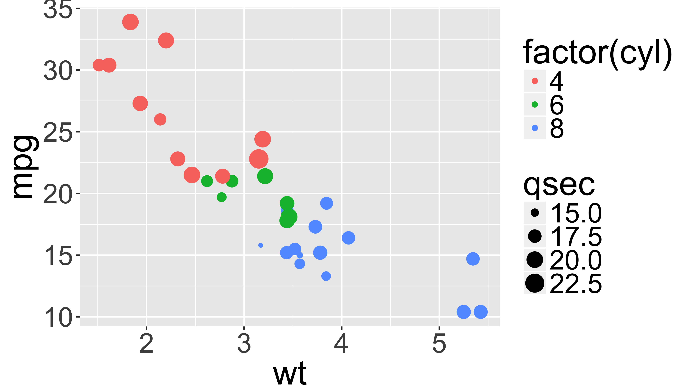
Multiple aesthetics
p +
geom_point(aes(colour = factor(cyl),size = qsec,shape=factor(gear)))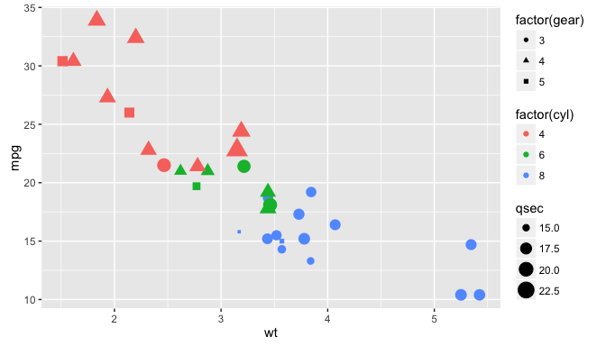
Add a linear model
p + geom_point() +
geom_smooth(method="lm")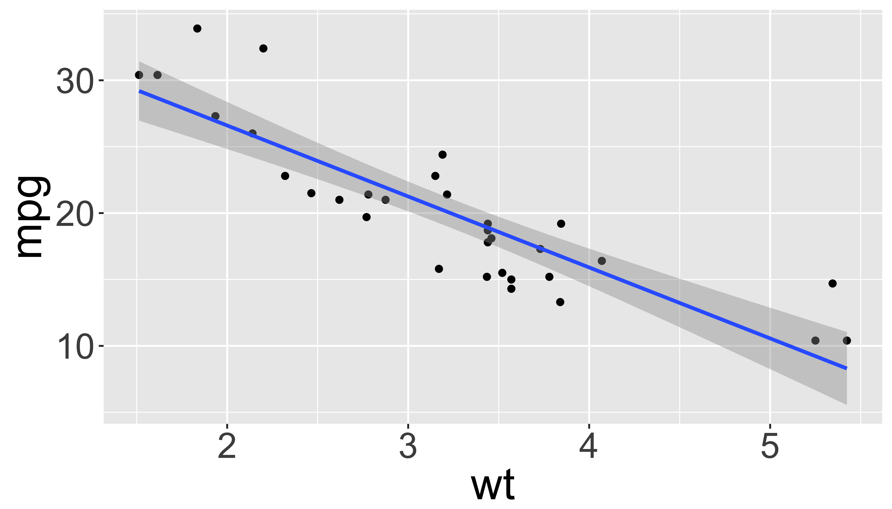
Add a LOESS smooth
p + geom_point() +
geom_smooth(method="loess")
Change scale color
p + geom_point(aes(colour = cyl)) +
scale_colour_gradient(low = "blue")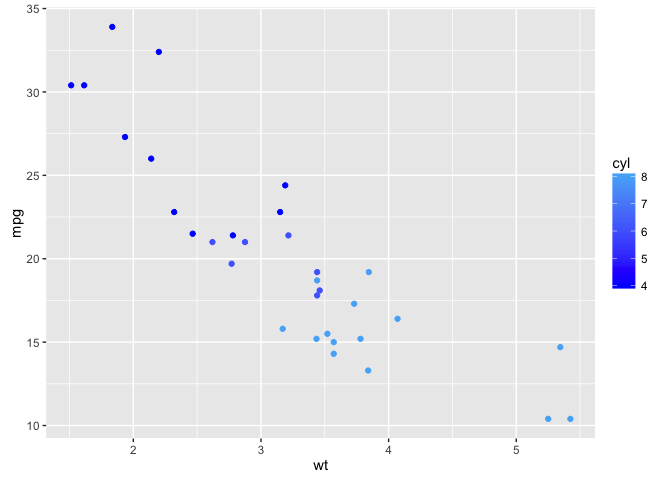
Change scale shapes
p + geom_point(aes(shape = factor(cyl))) +
scale_shape(solid = FALSE)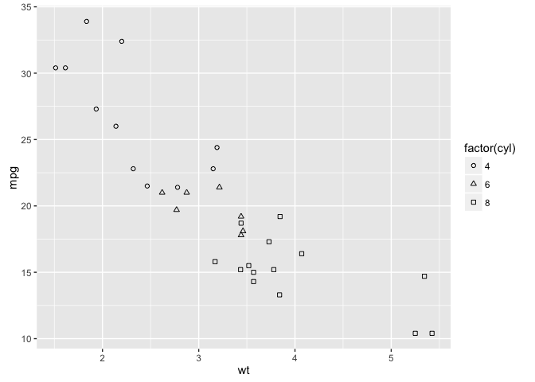
Set aesthetics to fixed value
ggplot(mtcars, aes(wt, mpg)) +
geom_point(colour = "red", size = 3)
Transparancy: alpha=0.2
d <- ggplot(diamonds, aes(carat, price))
d + geom_point(alpha = 0.2)
Varying alpha useful for large data sets
Transparancy: alpha=0.1
d +
geom_point(alpha = 0.1)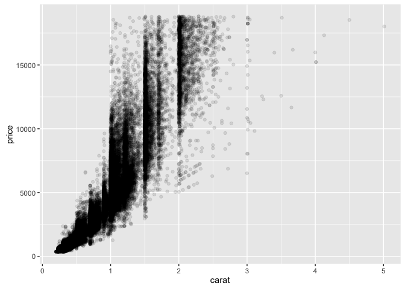
Transparancy: alpha=0.01
d +
geom_point(alpha = 0.01)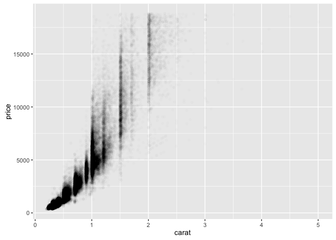
Building ggplots

Other Plot types

Edit plot p to include:
- points
- A smooth (‘loess’) curve
- a “rug” to the plot
p <- ggplot(mtcars, aes(x=wt, y=mpg))p+
geom_point()+
geom_smooth()+
geom_rug()

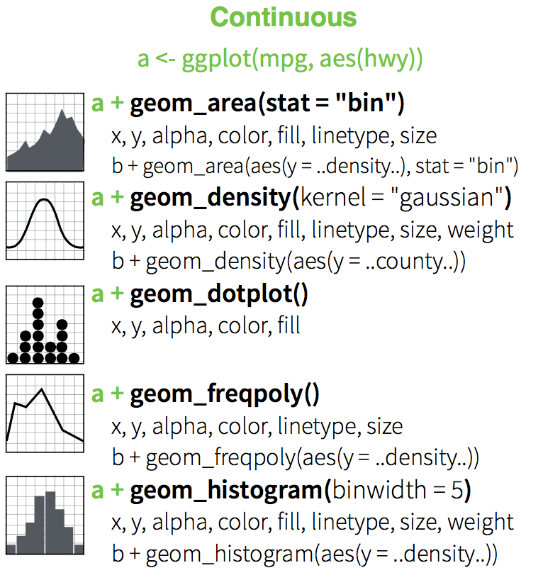

Discrete X, Continuous Y
p <- ggplot(mtcars, aes(factor(cyl), mpg))
p + geom_point()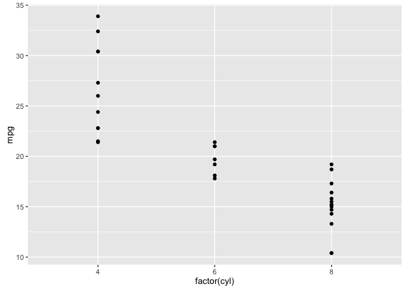
Discrete X, Continuous Y + geom_jitter()
p +
geom_jitter()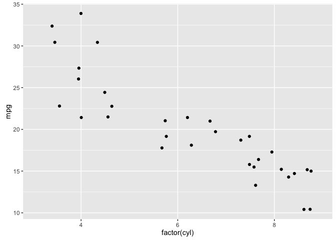
Discrete X, Continuous Y + geom_violin()
p +
geom_violin()
Discrete X, Continuous Y + geom_violin()
p +
geom_violin() + geom_jitter(position = position_jitter(width = .1))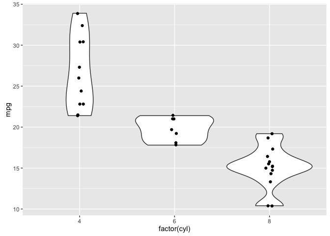

Three Variables

Will return to this when we start working with raster maps.
Stats
Visualize a data transformation

- Each stat creates additional variables with a common
..name..syntax - Often two ways:
stat_bin(geom="bar")ORgeom_bar(stat="bin")
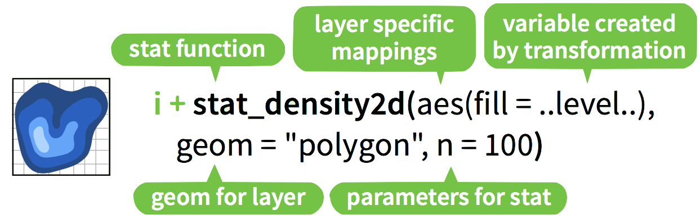
2D kernel density estimation
Old Faithful Geyser Data on duration and waiting times.
library("MASS")##
## Attaching package: 'MASS'## The following object is masked from 'package:dplyr':
##
## select## The following objects are masked from 'package:raster':
##
## area, selectdata(geyser)
m <- ggplot(geyser, aes(x = duration, y = waiting))
See ?geyser for details.
m +
geom_point()
m +
geom_point() + stat_density2d(geom="contour")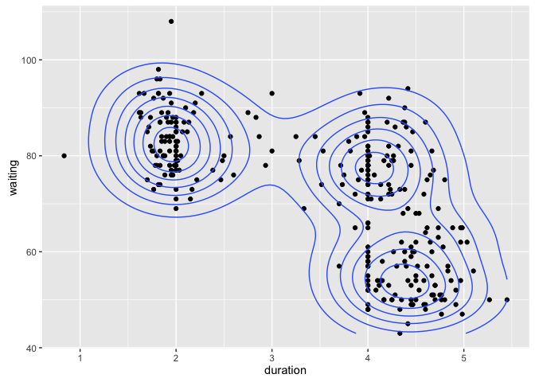
Check ?geom_density2d() for details
m +
geom_point() + stat_density2d(geom="contour") +
xlim(0.5, 6) + ylim(40, 110)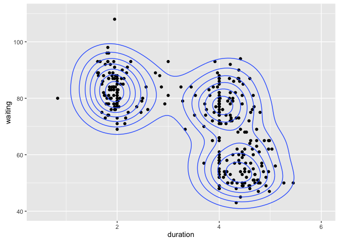
Update limits to show full contours. Check ?geom_density2d() for details
m + stat_density2d(aes(fill = ..level..), geom="polygon") +
geom_point(col="red")
Check ?geom_density2d() for details

Your turn
Edit plot m to include:
- The point data (with red points) on top
- A
binhexplot of the Old Faithful data
Experiment with the number of bins to find one that works.
See ?stat_binhex for details.
m <- ggplot(geyser, aes(x = duration, y = waiting))m + stat_binhex(bins=10) +
geom_point(col="red")
Specifying Scales

Discrete color: default
b=ggplot(mpg,aes(fl))+
geom_bar( aes(fill = fl)); b
Discrete color: greys
b + scale_fill_grey( start = 0.2, end = 0.8,
na.value = "red")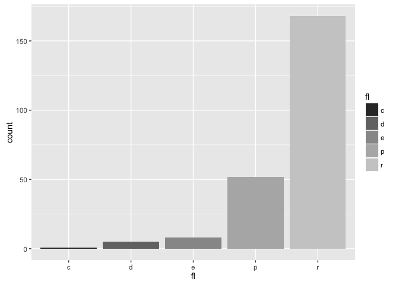
Continuous color: defaults
a <- ggplot(mpg, aes(x=hwy,y=cty,col=displ)) +
geom_point(); a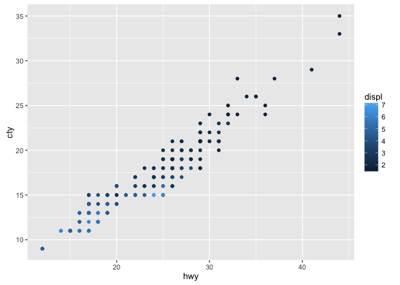
Continuous color: gradient
a + scale_color_gradient( low = "red",
high = "yellow")
Continuous color: gradient2
a + scale_color_gradient2(low = "red", high = "blue",
mid = "white", midpoint = 4)
Continuous color: gradientn
a + scale_color_gradientn(
colours = rainbow(10))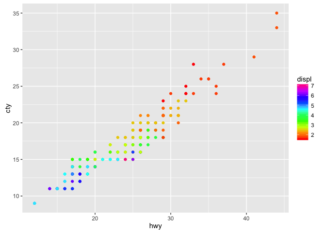
Discrete color: brewer
b +
scale_fill_brewer( palette = "Blues")

ColorBrewer: Diverging

ColorBrewer: Filtered

Your turn
Edit the contour plot of the geyser data:
- Reduce the size of the points
- Use a sequential brewer palette (select from colorbrewer2.org)
- Add informative x and y labels
m <- ggplot(geyser, aes(x = duration, y = waiting)) +
stat_density2d(aes(fill = ..level..), geom="polygon") +
geom_point(col="red")Note: scale_fill_distiller() rather than scale_fill_brewer() for continuous data
m + stat_density2d(aes(fill = ..level..), geom="polygon") +
geom_point(size=.75)+
scale_fill_distiller(palette="OrRd",
name="Kernel\nDensity")+
xlim(0.5, 6) + ylim(40, 110)+
xlab("Eruption Duration (minutes)")+
ylab("Waiting time (minutes)")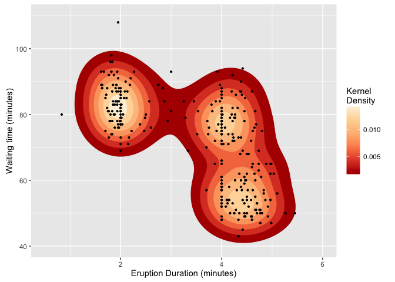
Or use geom=tile for a raster representation.
m + stat_density2d(aes(fill = ..density..), geom="tile",contour=F) +
geom_point(size=.75)+
scale_fill_distiller(palette="OrRd",
name="Kernel\nDensity")+
xlim(0.5, 6) + ylim(40, 110)+
xlab("Eruption Duration (minutes)")+
ylab("Waiting time (minutes)")
Axis scaling
Create noisy exponential data
set.seed(201)
n <- 100
dat <- data.frame(
xval = (1:n+rnorm(n,sd=5))/20,
yval = 10^((1:n+rnorm(n,sd=5))/20)
)Make scatter plot with regular (linear) axis scaling
sp <- ggplot(dat, aes(xval, yval)) + geom_point()
sp
Example from R Cookbook
log10 scaling of the y axis (with visually-equal spacing)
sp + scale_y_log10()
Coordinate Systems
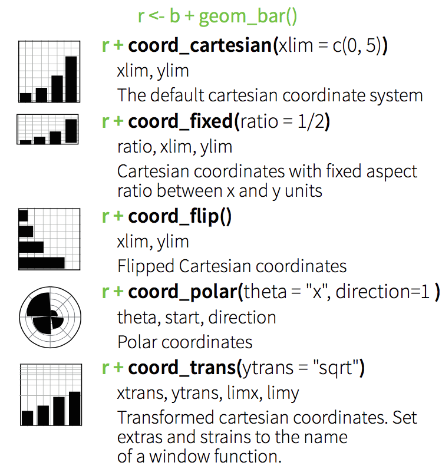
Position

Stacked bars
ggplot(diamonds, aes(clarity, fill=cut)) + geom_bar()
Dodged bars
ggplot(diamonds, aes(clarity, fill=cut)) + geom_bar(position="dodge")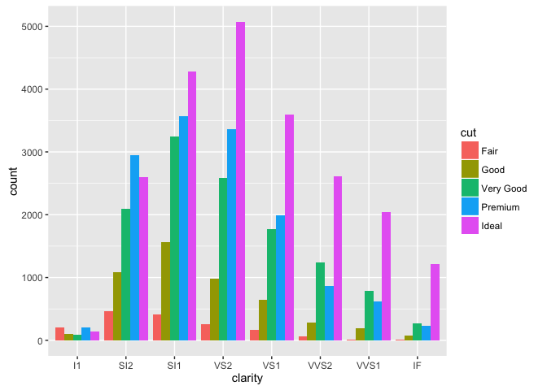
Facets
Use facets to divide graphic into small multiples based on a categorical variable.
facet_wrap() for one variable:
ggplot(mpg, aes(x = cty, y = hwy, color = factor(cyl))) +
geom_point()+
facet_wrap(~year)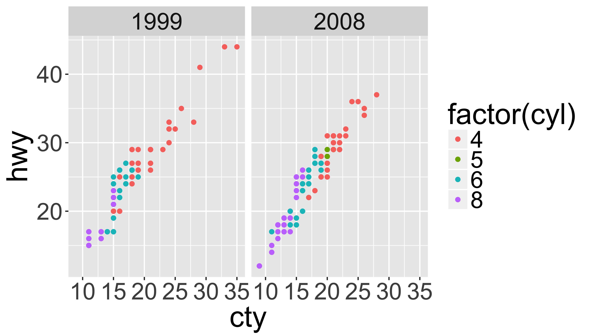
facet_grid(): two variables
ggplot(mpg, aes(x = cty, y = hwy, color = factor(cyl))) +
geom_point()+
facet_grid(year~cyl)
Small multiples (via facets) are very useful for visualization of timeseries (and especially timeseries of spatial data.)
Themes
Set default display parameters (colors, font sizes, etc.) for different purposes (for example print vs. presentation) using themes.
GGplot Themes

Quickly change plot appearance with themes.
More options in the ggthemes package.
library(ggthemes)Or build your own!
Theme examples: default
p=ggplot(mpg, aes(x = cty, y = hwy, color = factor(cyl))) +
geom_jitter() +
labs(
x = "City mileage/gallon",
y = "Highway mileage/gallon",
color = "Cylinders"
)Theme examples: default
p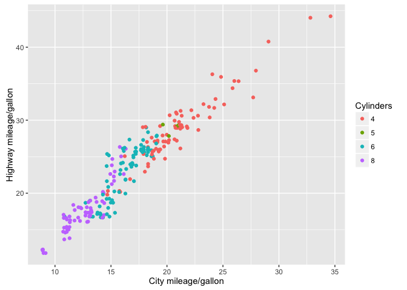
Theme examples: Solarized
p + theme_solarized()
Theme examples: Solarized Dark
p + theme_solarized(light=FALSE)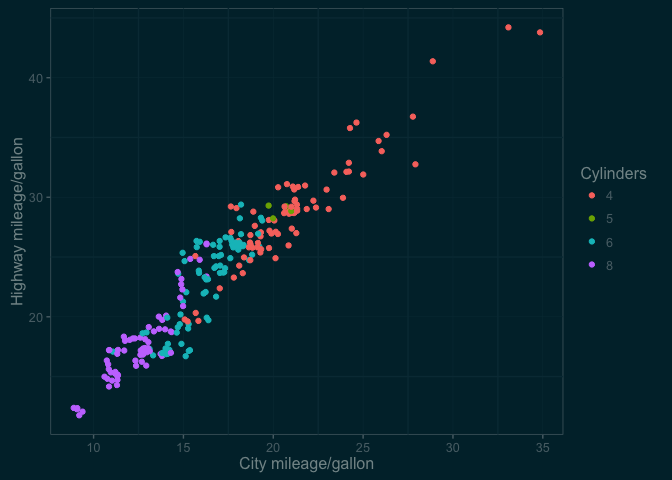
Theme examples: Excel
p + theme_excel() 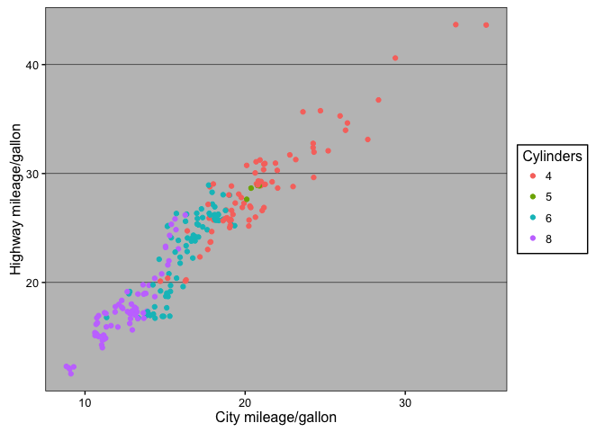
Theme examples: The Economist
p + theme_economist()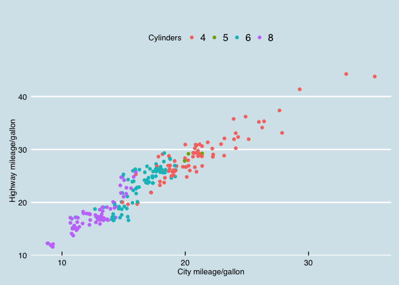
Saving/exporting
Saving using the GUI

Saving using ggsave()
Save a ggplot with sensible defaults:
ggsave(filename, plot = last_plot(), scale = 1, width, height)Saving using devices
Save any plot with maximum flexibility:
pdf(filename, width, height) # open device
ggplot() # draw the plot(s)
dev.off() # close the deviceFormats
- jpeg
- png
- tif
and more…
Your turn
- Save the
pplot from above usingpng()anddev.off() - Switch to the solarized theme with
light=FALSE - Adjust fontsize with
base_sizein the theme+ theme_solarized(base_size=24)
Save a plot: Example 1
png("03_assets/test1.png",width=600,height=300)
p + theme_solarized(light=FALSE)
dev.off()## quartz_off_screen
## 2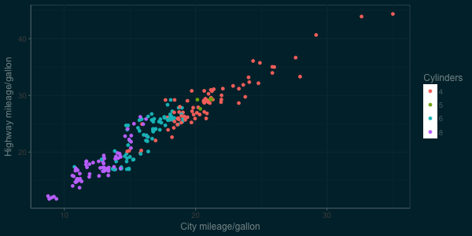
Save a plot: Example 2
png("03_assets/test2.png",width=600,height=300)
p + theme_solarized(light=FALSE, base_size=24)
dev.off()## quartz_off_screen
## 2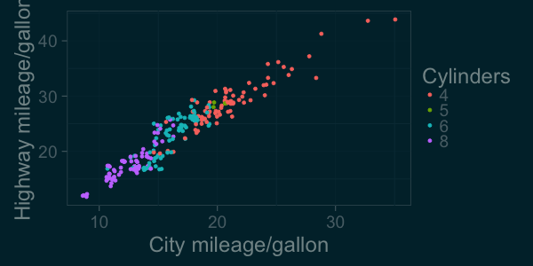

.jpg){kind=link}